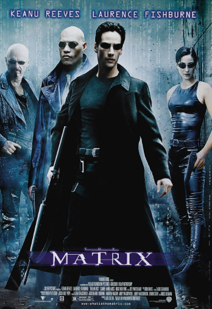
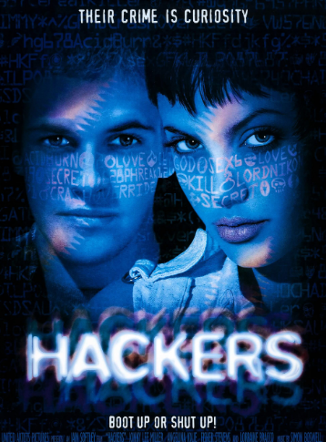
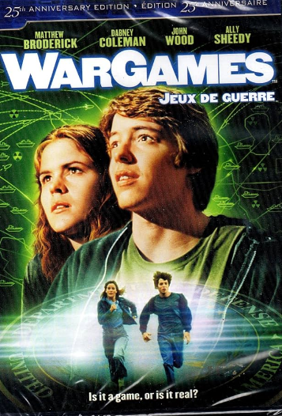
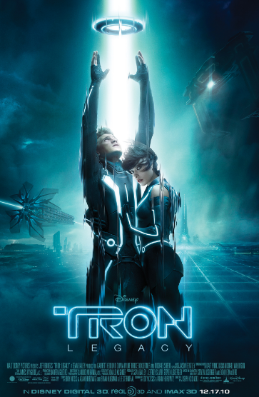

The Best Movies According to Kyle
My top 5 movies for my inspiration.
-
The Matrix

-
Mind-bending exploration of reality and perception, leaving me questioning the nature of existence,
especially the scene where Neo takes the red pill and wakes up to the truth, resonating deeply with my
curiosity and sense of wonder.
-
Hackers

-
Nostalgic celebration of hacker culture and camaraderie, evoking a sense of belonging and excitement for
unconventional problem-solving, particularly the scene where the hackers band together to outsmart the
security systems, igniting my passion for creative thinking and teamwork.
-
WarGames

-
Timeless cautionary tale about the unintended consequences of hacking, stirring a mix of fear and
introspection, especially during the scene where the protagonist realizes the catastrophic potential of
his actions, prompting me to reflect on the ethical dilemmas and responsibilities inherent in
programming and technology.
-
The Social Network
-
Compelling portrayal of ambition, rivalry, and betrayal in tech entrepreneurship, eliciting a range of
emotions from admiration to empathy, particularly in scenes depicting the tumultuous relationships and
power struggles among the founders, resonating with my fascination for the human drama behind
technological innovation.
-
Tron

-
Groundbreaking depiction of a visually stunning digital universe, sparking a sense of awe and
inspiration, especially during the mesmerizing scenes where the protagonist navigates through the
vibrant, computer-generated landscapes, fueling my imagination and passion for pushing the boundaries of
what's possible in programming and technology.